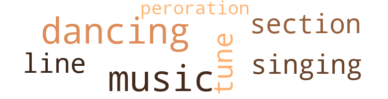
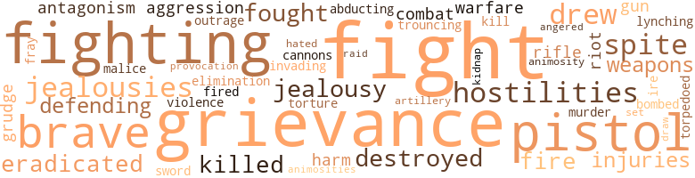
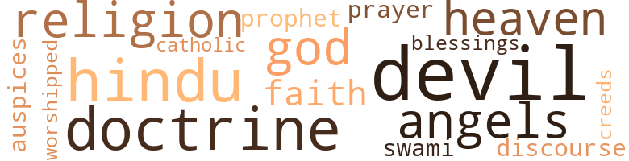

Colored Gentleman (The), by Imbert, Dennis (1931)
9 music-related terms matched in this text.
Most frequent terms in this topic: music (2); dancing (2); tune (1); section (1); peroration (1)
dance.v.03
Definition: skip, leap, or move up and down or sideways
| word | sentence |
|---|---|
| dancing | " What do you want - a loan ? " he asked , chucking her under the chin , her two rows of ivory teeth glistening and her eyes dancing with merriment . |
| dancing | What 's the program ? " and he looked at the gay young people dancing on the green swath , laughing and flirting . |
music.n.01
Definition: an artistic form of auditory communication incorporating instrumental or vocal tones in a structured and continuous manner
| word | sentence |
|---|---|
| music | My sister Emily is in France , studying music . |
| music | " I have been enjoying the music - with your father , Miss LeBlanc . " |
peroration.n.02
Definition: (rhetoric) the concluding section of an oration
| word | sentence |
|---|---|
| peroration | Francis finished his peroration in a sanguine tone as if he was pleading a case before the bar of justice . |
section.n.01
Definition: a self-contained part of a larger composition (written or musical)
| word | sentence |
|---|---|
| section | The negroes contended they were American citizens , born and raised in that section of the country , built their homes and raised families . |
singing.n.01
Definition: the act of singing vocal music
| word | sentence |
|---|---|
| singing | " We have been hearing the angels singing and the band playing , you just missed the show , " replied Juanita pleasantly . |
tune.n.01
Definition: a succession of notes forming a distinctive sequence
| word | sentence |
|---|---|
| tune | " You need n't worry papa , you 'll soon hear a tune played for your special benefit . " |
| line | And in New Orleans there are representative colored men of high repute and culture , leaders of their race forging ahead in their particular line of endeavor in the cause of obtaining fairness and a square deal for their race in all matters pertaining to the civic and political life of the community of which they form part - gentlemen of undoubted integrity such as may be found among any advanced group of the Caucasian race , who have risen above the difficulties of discrimination and prejudice simply on account of their color but who have all the attributes of the intelligent American citizen , some of whose names and photographs are appended in a supplement to this volume . |
105 violence-related terms matched in this text.
Most frequent terms in this topic: fight (10); fighting (5); grievance (4); spite (3); drew (3)
affray.n.02
Definition: a noisy fight
| word | sentence |
|---|---|
| fray | The fight was between the Old Regular Candidate and Francis for Congress and the opposing forces were lined up for the fray . |
aggravation.n.02
Definition: unfriendly behavior that causes anger or resentment
| word | sentence |
|---|---|
| provocation | It was in the afternoon , one day in September after the Colonel and Francis had participated in the defense of a man who had killed on provocation , while partaking of a light luncheon at one of the downtown restaurants , that events in the life of Francis began to shape a course tending to his eventual destiny . |
aggression.n.01
Definition: a disposition to behave aggressively
| word | sentence |
|---|---|
| aggression | The Major hinted at possible Japanese aggression in the Orient , of land concessions obtained by them in Mexico to be used for army and naval bases in case of war with the United States . |
| aggression | The candidate , State Senator Shrewsbury was an anti-Klansman and determined to eliminate the hooded organization from State politics , consequently the " Invisible Empire " decided to carry on a campaign of aggression against the Senator and his supporters whoever they might be . |
anger.n.01
Definition: a strong emotion; a feeling that is oriented toward some real or supposed grievance
| word | sentence |
|---|---|
| ire | Anyway the ire of the Yellow Race against the Anglo-Saxon was steadily rising and in its swiftness lay the danger . |
anger.v.02
Definition: become angry
| word | sentence |
|---|---|
| angered | The thought angered him , and he swore , by fair or foul means he was going to wed her . |
animosity.n.01
Definition: a feeling of ill will arousing active hostility
| word | sentence |
|---|---|
| animosity | " I am afraid however , " answered Francis , " that all these periodical upheavals in the lives of nations breed distrust and animosity , and trouble to an extent we can not foresee . |
| animosities | But in the political game , it has been proved that the outcome of a campaign hinged many a time on personal animosities with a woman at the bottom of it . |
battle.v.01
Definition: battle or contend against in or as if in a battle
| word | sentence |
|---|---|
| combat | Laws should be enacted and enforced vigorously to combat the evils of immorality and corruption . |
bombard.v.02
Definition: throw bombs at or attack with bombs
| word | sentence |
|---|---|
| bombed | The Japanese carried their operations to the Panama Canal Zone and bombed naval stores . |
cannon.n.04
Definition: heavy automatic gun fired from an airplane
| word | sentence |
|---|---|
| cannons | He also told me that he had been to California , and from observations and other sources he had found a Japanese population of 100,000 seemingly trying to make a living in agriculture and other pursuits , but in reality entrenching themselves for the day when they will exchange their peaceful implements for rifles and cannons . |
destroy.v.04
Definition: put (an animal) to death
| word | sentence |
|---|---|
| destroyed | When he and the Ward Boss reached the scene , they found the bomb had completely wrecked the engine and destroyed the forepart of the machine . |
| destroyed | All mountain passes and tunnels were blocked , and bridges destroyed by the enemy , isolating the state from the East and North . |
draw.v.23
Definition: pull (a person) apart with four horses tied to his extremities, so as to execute him
| word | sentence |
|---|---|
| drew | Presently , a sedan drew up before it and Francis with the other two men posing as Hartley & Son , appeared and got into the sedan . |
| drew | The other machine following them drew up also to the curb and its two occupants got out and entered the bank , one taking a position at the entrance , the other , keeping close to Francis and the two conspirators . |
| draw | The wealth of the Government is for the masses who draw dividends from its treasury when not employed - a system which though commendable in some instances , is not applicable to the United States for the simple reason that unemployment would become a chronic ailment among the immigrant element of the nation . |
| drew | Such was the institution established through the philanthropy of Juanita LeBlanc for the uplift of unfortunate colored girls , and three times a week a green painted roadster drew up before the entrance and this charming young lady got out to visit her " girls , " as she called them and who worshipped her . |
eliminate.v.03
Definition: kill in large numbers
| word | sentence |
|---|---|
| eradicated | " According to the Constitution and the rules of fair play , they ought to , but there are prejudices which must be eradicated , and a spirit of fellowship and good-will to all men infused in the growing generation . " |
| eradicated | But it is not only the smuggling that is to be eradicated . |
elimination.n.05
Definition: the murder of a competitor
| word | sentence |
|---|---|
| elimination | It was n't the work of a crank , it was the last card played by a powerful combination , determined on his elimination from local politics . " |
fight.n.02
Definition: the act of fighting; any contest or struggle
| word | sentence |
|---|---|
| combat | ' A young man , fresh from a victorious political combat should not look as you do . |
fight.n.05
Definition: a boxing or wrestling match
| word | sentence |
|---|---|
| fight | What the outcome of the fight on the Exclusion Act would be was as yet undecided . |
| fight | " I suppose he will try , and I guess he will put up a good fight to win . " |
| fight | The fight was between the Old Regular Candidate and Francis for Congress and the opposing forces were lined up for the fray . |
| fight | In the meantime the apartment house on Fifth Avenue which had been under surveillance was raided , releasing Hartley and arresting Martin who after showing fight submitted to the police . |
| fight | The Senator made a strong fight for the Governorship but lost , his opponent receiving the smallest majority a candidate for that office ever received . |
fight.v.02
Definition: fight against or resist strongly
| word | sentence |
|---|---|
| fight | But from his bed of sickness , he began to plan his campaign to fight the agents of his powerful enemies who had meant to kill him , or at least put him out of the running . |
| fought | I can not say that I fought it , as it has been the great incentive in my life , without it I should have failed in the struggle I have gone through . |
| fight | We 'll put a private detective on that contractor-politician 's trail , and I bet we 'll get some interesting things to fight with . |
| fighting | " I sympathize with all those that are fighting for the recognition of their rights and striving to attain them . " |
| fighting | " That is just such occurrences as this that we are fighting against , - the injustice to a race that only wants to live their own lives and the right to an equal share of the world 's munificence . |
| fight | Francis was determined to fight to the last , knowing he had an interested audience in Juanita , and that made all the difference in the world and it has been so ever since we can remember and will be as long as there is life . |
| defending | I am not defending him , such attack from you does not need defending . " |
| defending | I am not defending him , such attack from you does not need defending . " |
| fighting | If you wanted to win my love , you should have tried some other way than fighting a man behind his back . " |
| fighting | " I hope they confine their fighting to California and leave us alone here , " answered Juanita . |
| fought | He was glad to realize that nearly all that he fought for and advocated were being put into practice . |
| fight | '' For all that , I would fight for you . " |
| fighting | Your fighting spirit will be up in arms then ; you 'll go at it better . " |
| fight | " Thank you Colonel , " answered Francis as he shook hands with the old gentleman , " it is the knowledge of such confidence that will help me to fight back with unwavering determination . " |
grudge.n.01
Definition: a resentment strong enough to justify retaliation
| word | sentence |
|---|---|
| grievances | Last minute measures were adopted to allay the grievances of certain political factions among which was the Japanese Exclusion Act . |
| grievances | However , this concession did not seem to allay the grievances of Japan who had insisted on repeal . |
| grievances | They imagine they have their grievances on account of their being discriminated against . |
| grievance | Granted that the people in Washington and elsewhere forsee a war of the races , the best way to prevent it is to work , out a policy of conciliation towards those people that may have a real grievance against us . |
| grudge | Has he any grudge against you ? " |
| grievance | Those women are liable to squeal on them anytime they imagine they have a grievance . " |
| grievance | From what the Senator had told him , the Major was under the impression that he was a preferred suitor for the hand of the Colonel 's daughter in marriage , merely a supposition , nevertheless , strong enough an incentive to undermine Francis ' character , who thought it would have been more gentlemanly on his part to come in the open and air his grievance . |
| grievance | " Well a man in public life is bound to have enemies - men who imagine they have a grievance . " |
| grudge | " But sometimes , it 's a personal , private grudge , and in that case it is more dangerous . |
gun.n.01
Definition: a weapon that discharges a missile at high velocity (especially from a metal tube or barrel)
| word | sentence |
|---|---|
| gun | Francis and Juanita with their young son Francis junior , were sitting on their front porch on Palmer avenue when the echo of a gun was heard several times in succession . |
| guns | A landing was effected at San Pedro from the various battleships stationed there , but that unit was only on the defensive and dared riot go beyond the protection of their ships ' guns . |
hate.v.01
Definition: dislike intensely; feel antipathy or aversion towards
| word | sentence |
|---|---|
| hated | She wished he had not done that , for though she appreciated his kindness and thoughtfulness , she hated to still let him think she cared for him . |
hostility.n.01
Definition: a hostile (very unfriendly) disposition
| word | sentence |
|---|---|
| hostilities | After two weeks of hostilities , the beautiful city of Los Angeles and adjacent towns with all their natural and artificial wealth fell into the hands of the Japanese , and the Metropolitan city of San Francisco , guarded by its shore batteries , aircrafts and innumerable battleships in its magnificent harbor , was making a determined stand against the attacks of the enemy who used promiscuously the new deadly gas invented by the European educated Chinaman . |
| hostilities | Such were conditions after a year of hostilities when one night at two o'clock in the morning several loud reports were heard in the vicinity of the Naval base at Algiers and a terrible bombardment ensued ; A squadron of Japanese bombers had quietly crept over the city and engaged a number of American planes in battle . |
| hostilities | Finally hostilities in the United States had come to an end with the understanding that the question at issue was to be settled at a general conference in Paris where also England and its belligerent colonies were to meet and sign the birth certificates of three new nations . |
hostility.n.02
Definition: a state of deep-seated ill-will
| word | sentence |
|---|---|
| antagonism | Well , the man was here during the Primary and knowing of the Major 's antagonism against you , approached him and for a sum disposed of these papers . |
| antagonism | Of course it could be easily refuted , but the mere fact that it was attempted would find credence and antagonism in some quarters . |
indignation.n.01
Definition: a feeling of righteous anger
| word | sentence |
|---|---|
| outrage | " But it 's an outrage ! |
injury.n.01
Definition: any physical damage to the body caused by violence or accident or fracture etc.
| word | sentence |
|---|---|
| injuries | He was sure of a majority in the city , but up-country where he was not well known and unable to reach on account of his injuries , a great deal of their votes would swing to his opponent . |
| harm | Keep quiet and do as you are told and no harm will come to you . " |
| injuries | A passing autoist volunteered to take them to the Touro Infirmary where on examination they were found to have suffered minor cuts and shock to their nervous systems , and though Francis ' injuries were not serious , on further examination it was found one of Juanita 's ankles was sprained . |
| harm | You need not fear any bodily harm . |
invade.v.01
Definition: march aggressively into another's territory by military force for the purposes of conquest and occupation
| word | sentence |
|---|---|
| invading | And if the tunnels were blocked , the bridges blown up and the mountain pass filled , California would be at the mercy of an invading force , within its confines . |
jealousy.n.01
Definition: a feeling of jealous envy (especially of a rival)
| word | sentence |
|---|---|
| jealousy | She knew of his jealousy and of his sinister influence in the council of the Ku Klux Klan . |
| jealousies | He condemned the British for fomenting trouble and encouraging petty jealousies among the native princes so as to prevent a united movement for self-assertion to redeem the prestige they had lost among their neighbors . |
| jealousies | Trouble may increase and the jealousies of man may interfere , but the knowledge of their mutual love would be their guiding star . |
| jealousy | He smiled goodnaturedly ; sensing a bit of jealousy in the question . |
| jealousies | The allure of her charm was an incentive for greater efforts for success which he hoped would eventually give him the opportunity he craved for - to bid for her possession , to have and to hold her as his own beloved wife , to love and protect her against all the petty jealousies and inconsistencies of life . |
kidnap.v.01
Definition: take away to an undisclosed location against their will and usually in order to extract a ransom
| word | sentence |
|---|---|
| abducting | She stuck to her story and never wavered in her accusation of the two men at the bar , of abducting her , and offering her a bribe to involve the young barrister in a statutory offense against her , and when she refused , she had been mistreated till she was about to lose consciousness in the car when it swerved at a corner on St. Charles Avenue and was struck by Francis ' car . |
| kidnap | In the meantime do n't think anybody is going to kidnap me . " |
kill.v.10
Definition: cause the death of, without intention
| word | sentence |
|---|---|
| kill | But from his bed of sickness , he began to plan his campaign to fight the agents of his powerful enemies who had meant to kill him , or at least put him out of the running . |
| killed | They nearly killed him and God knows if they may not try to finish him this time . " |
| killed | It was in the afternoon , one day in September after the Colonel and Francis had participated in the defense of a man who had killed on provocation , while partaking of a light luncheon at one of the downtown restaurants , that events in the life of Francis began to shape a course tending to his eventual destiny . |
lynching.n.01
Definition: putting a person to death by mob action without due process of law
| word | sentence |
|---|---|
| lynching | He denounced the illegal practice of lynching which should not be tolerated in a country with statute books to proceed in any case through the regular channel of the law . |
malice.n.01
Definition: feeling a need to see others suffer
| word | sentence |
|---|---|
| spite | When he returned with it , in bold type , the headline read - " RACE RIOT IN ALABAMA - NEGROES ARMING " The trouble was about the insistence of the manager of a Carbon Black plant in a certain town in Alabama to continue to employ negroes in spite of the demand of the white population to fire them and replace them with white laborers . |
| malice | " Always wear it for I have consulted the books of the great seers of antiquity about your nativity and they have all prophesied great things for you , but you must beware of certain parties at this time of your life for ahead there is danger and malice about you . |
| spite | In spite of the army of special officers to enforce the Volstead Act , liquor is still being made , in spite of the fleet of Coast Guard boats patrolling the sea , liquor is still being smuggled . |
| spite | In spite of the army of special officers to enforce the Volstead Act , liquor is still being made , in spite of the fleet of Coast Guard boats patrolling the sea , liquor is still being smuggled . |
murder.n.01
Definition: unlawful premeditated killing of a human being by a human being
| word | sentence |
|---|---|
| murder | Money , the root of all evils , greed , robbery , and murder , the incentive for war , was being advocated abolished , and a system of universal exchange put in operation , eliminating both wealth and poverty . |
open_fire.v.01
Definition: start firing a weapon
| word | sentence |
|---|---|
| fire | When he returned with it , in bold type , the headline read - " RACE RIOT IN ALABAMA - NEGROES ARMING " The trouble was about the insistence of the manager of a Carbon Black plant in a certain town in Alabama to continue to employ negroes in spite of the demand of the white population to fire them and replace them with white laborers . |
| fired | Shots were fired in rapid succession but missed their marks as the planes plunged or soared high out of reach . |
| fire | Finally , the Japanese came close enough to fire a broadside at the American , a wing of which was shot away and its engine hit as it nosed downward and fell in the river . |
pistol.n.01
Definition: a firearm that is held and fired with one hand
| word | sentence |
|---|---|
| pistol | He strode straight across the room where the other man was sitting and with drawn pistol ordered him to stand up . |
| pistols | At that moment , the man who had kept close to them all the while , pushed two pistols to their ribs and ordered them to a corner of the bank where he relieved them of their artillery and the money they had just secured . |
| pistol | His own machine was not damaged save for a broken windshield He whipped out his pistol and showed a police badge he wore underneath his vest to the two occupants of the sedan , and ordered them to get out and enter his machine . |
| pistol | With his pistol at the driver 's back alongside of whom he placed the other man , while he and the girl occupied the back seat , he ordered him to drive to headquarters . |
raid.v.01
Definition: search without warning, make a sudden surprise attack on
| word | sentence |
|---|---|
| raid | He finally decided to raid the club , but he was careful to give notice to the management of his intention . |
rifle.n.01
Definition: a shoulder firearm with a long barrel and a rifled bore
| word | sentence |
|---|---|
| rifles | He also told me that he had been to California , and from observations and other sources he had found a Japanese population of 100,000 seemingly trying to make a living in agriculture and other pursuits , but in reality entrenching themselves for the day when they will exchange their peaceful implements for rifles and cannons . |
| rifle | The little boy was three years old and ignorant of what was transpiring in his country , and curiously enough was at that moment marching up and down the porch with a little wooden rifle his father had given him , on his shoulder . |
riot.n.01
Definition: a public act of violence by an unruly mob
| word | sentence |
|---|---|
| riots | You seldom hear of i race riots in the large cities where the negro is of a different caliber from his country cousin . |
| riot | A landing was effected at San Pedro from the various battleships stationed there , but that unit was only on the defensive and dared riot go beyond the protection of their ships ' guns . |
sic.v.01
Definition: urge to attack someone
| word | sentence |
|---|---|
| set | " If you are so set on this , child , I suppose it 's up to me to see about it , " and he jokingly remarked , " when all your money is gone , you can call on me for an application in some old Ladies Home . |
sword.n.01
Definition: a cutting or thrusting weapon that has a long metal blade and a hilt with a hand guard
| word | sentence |
|---|---|
| sword | Germany had annexed what was left of the great Austrian empire and once more rattling her sword . |
thrashing.n.01
Definition: a sound defeat
| word | sentence |
|---|---|
| trouncing | " I am afraid , " he was telling the Senator , " I am due for a good trouncing . " |
torment.v.01
Definition: torment emotionally or mentally
| word | sentence |
|---|---|
| torture | They came pretty near blackening his character in the blackmail case and might have succeeded if he had n't by chance ran into those men before they took the girl to some remote place for torture . |
torpedo.v.01
Definition: attack or hit with torpedoes
| word | sentence |
|---|---|
| torpedoed | Two battleships and a cruiser of the reserve Atlantic division were torpedoed as they were going through the canal , suspending navigation through the waterway . |
violence.n.01
Definition: an act of aggression (as one against a person who resists)
| word | sentence |
|---|---|
| violence | A few agitators at first , grew into a mob and they threatened violence to the negroes and destruction of their property if they did not leave the town at once . |
war.n.03
Definition: an active struggle between competing entities
| word | sentence |
|---|---|
| warfare | Should all of these peoples combine in course of time , trained in the arts of modern warfare and determined to be recognized as equals , determined to break down forever the bars of prejudice and discrimination , what chance would the Western Powers have ? " |
| warfare | " This is a remote idea , " answered the Senator , " in the first place , they are so widely scattered , organization would be an impossibility , and in the second place , outside of Japan , their equipment for carrying on such a warfare could not be obtained . |
weapon.n.01
Definition: any instrument or instrumentality used in fighting or hunting
| word | sentence |
|---|---|
| weapons | With modern weapons plus efficiency equivalent to the wonderful achievements of Japan , the millions of India and China could with a certain measure of success challenge : the lordship of Britain over India and secure for China her supreme and unfettered sovereignty . |
| weapons | The big stick of the cave man is a thing of the Past , so should be all weapons of war . " |
weapon.n.02
Definition: a means of persuading or arguing
| word | sentence |
|---|---|
| artillery | At that moment , the man who had kept close to them all the while , pushed two pistols to their ribs and ordered them to a corner of the bank where he relieved them of their artillery and the money they had just secured . |
weather.v.01
Definition: face and withstand with courage
| word | sentence |
|---|---|
| brave | A reactionary government controlled and abetted by the financial magnates of Wall Street and Big Interests was in the saddle in the self-styled land of the brave and of the free - America - A presidential election was near and both of the leading political parties were putting their house in order for the public searchlight which was to be turned in their direction . |
| brave | Francis was brave in denouncing the Ku Klux Klan whose tactics he insisted were un-American . |
| brave | Unless some profit can be derived from him , has any of them been free enough and brave enough to recognize merit in the negro , to realize that he is striving for education and enlightment and should not be hampered by discrimination on account of his color ? |
29 religion-related terms matched in this text.
Most frequent terms in this topic: devil (3); doctrine (3); religion (2); God (2); angels (2)
augur.n.01
Definition: (ancient Rome) a religious official who interpreted omens to guide public policy
| word | sentence |
|---|---|
| auspices | He lectured under the auspices of the order of the United Bretheren at their meeting place which was thrown open to the public . |
blessing.n.05
Definition: the act of praying for divine protection
| word | sentence |
|---|---|
| blessings | It is true that in isolated places where the blessings of modern standard of living and education have not reached the negro , where opportunity for development of character has been denied him , he still retains his primitive desires and commits crimes , but he is never the super-criminal that we read about almost every day in the newspapers . |
catholic.n.01
Definition: a member of a Catholic church
| word | sentence |
|---|---|
| Catholic | He scored the hooded organization 's charge of his being a Catholic , claiming the right of every man to his religious convictions and that religion should be kept out of politics . |
creed.n.01
Definition: any system of principles or beliefs
| word | sentence |
|---|---|
| creeds | Girls of all creeds were admitted but none over twenty years of age . |
doctrine.n.01
Definition: a belief (or system of beliefs) accepted as authoritative by some group or school
| word | sentence |
|---|---|
| doctrine | " Well for my part , " replied Francis , I believe there is more to be feared in the spread from Mexico of the Agrarian doctrine than any Japanese invasion . |
| doctrine | Through the encroachment of mass machinery production of recent years , employment was steadily decreasing and the jobless absorbed with alacrity the doctrine of the Mexican Agrarian element that entered the United States in the wake of the Japanese invasion , disrupting the pacific conduct of Labor . |
| doctrine | " That 's true , but some people do n't always practice that doctrine of brotherly love so essential to the right way of living . " |
eden.n.01
Definition: any place of complete bliss and delight and peace
| word | sentence |
|---|---|
| heaven | " In heaven , ladies are admitted free . " |
| heavens | " What 's the matter , boy , in the ' dumps ' again ? '' asked his father , " when I was your age , no one could accuse me of being a star-gazer , at least not in the heavens when there were so many brilliant ones all about me . |
god.n.03
Definition: a man of such superior qualities that he seems like a deity to other people
| word | sentence |
|---|---|
| God | God knows where my fancy will take me next year , " and she made a little grimace . |
| God | They nearly killed him and God knows if they may not try to finish him this time . " |
hindu.n.02
Definition: a person who adheres to Hinduism
| word | sentence |
|---|---|
| Hindu | The Hindu was known to the group , as attested by the effusion of his reception . |
| Hindus | Mexicans , Hindus and other nationalities had flocked to the banner of the Japanese operating in Southern California , augmenting their number alarmingly , hard to control against excesses , unmindful of discipline . |
| Hindus | In India we have the British , a handful of Europeans so to speak , trying to force their civilization on millions of Hindus of many castes and centuries old traditions and denying them outonomy . |
prayer.n.01
Definition: the act of communicating with a deity (especially as a petition or in adoration or contrition or thanksgiving)
| word | sentence |
|---|---|
| prayer | " You two look as if you had just come from a prayer meeting , " remarked the Colonel as he took a seat in a chair opposite Francis . |
prophet.n.02
Definition: someone who speaks by divine inspiration; someone who is an interpreter of the will of God
| word | sentence |
|---|---|
| prophet | " Are you a weather prophet ? " |
religion.n.01
Definition: a strong belief in a supernatural power or powers that control human destiny
| word | sentence |
|---|---|
| faith | Nothing however could shake her faith in the young barrister , and in the hour of need , of faithful comfort , she tried to impress it on him in different ways . |
| religion | All should unite for India irrespective of caste or religion . |
| religion | He scored the hooded organization 's charge of his being a Catholic , claiming the right of every man to his religious convictions and that religion should be kept out of politics . |
saint.n.02
Definition: person of exceptional holiness
| word | sentence |
|---|---|
| angels | " We have been hearing the angels singing and the band playing , you just missed the show , " replied Juanita pleasantly . |
| angels | " I guess not , papa , the angels are well trained . |
satan.n.01
Definition: (Judeo-Christian and Islamic religions) chief spirit of evil and adversary of God; tempter of mankind; master of Hell
| word | sentence |
|---|---|
| devil | But give the devil his due . |
| devil | So long as we get our rake-off , what the devil do we care if they are devotees of black or white magic , " and the Ward Boss brought out of his stuffed inside coat pocket a roll of twenty dollar bills which he shoved over to the Chief . |
| devil | " What the devil are you talking about ? " |
| Devil | " And the Devil to pay perhaps / ' returned Francis bluntly . |
| Devil | " Not as bad as that , " he said , but the Devil sometimes is a jolly good fellow . |
sermon.n.01
Definition: an address of a religious nature (usually delivered during a church service)
| word | sentence |
|---|---|
| discourse | She listened attentively to his mature discourse on subjects pertaining to creative science , of the great wonderful inventions worked out with laborious care and incessant perseverance in the laboratories of America . |
swami.n.01
Definition: a Hindu religious teacher; used as a title of respect
| word | sentence |
|---|---|
| Swami | " He is the squarest and cleverest lawyer we have now practicing in the State , " replied the big Boss of the place , " but Swami , I do n't believe you could secure his services . |
worship.v.02
Definition: show devotion to (a deity)
| word | sentence |
|---|---|
| worshipped | Such was the institution established through the philanthropy of Juanita LeBlanc for the uplift of unfortunate colored girls , and three times a week a green painted roadster drew up before the entrance and this charming young lady got out to visit her " girls , " as she called them and who worshipped her . |